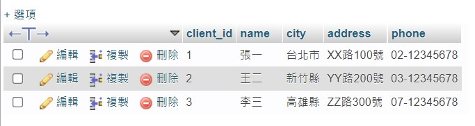
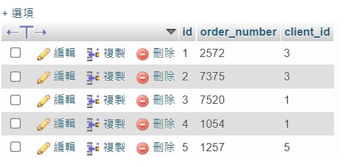
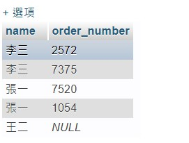

懶人包。
基礎
讀取
口訣：從哪個「table」選到哪個「欄位」：
主結構：SELECT … FROM … WHERE …
1 | SELECT * FROM users; |
代表 users 這個 table 中的所有欄位。
1 | SELECT id FROM users; |
代表 users 這個 table 中的 id 欄位。
1 | SELECT id, content FROM users; |
代表 users 這個 table 中的 id 跟 content 欄位。
1 | SELECT content as text FROM users; |
代表 users 這個 table 中的 content 欄位，但我要把這個欄位名稱改成 text
1 | SELECT * FROM users WHERE username='PeaNu' |
代表 users 這個 table 中 username 是 PeaNu 的所有欄位。
1 | SELECT * FROM users WHERE username='PeaNu' AND id=1; |
代表 users 這個 table 中 username 是 PeaNu 且 id 是 1 的 所有欄位。
1 | SELECT * FROM users WHERE username='aaa' OR id=1; |
代表 users 這個 table 中 username 是 aaa 或 id 是 1 的 所有欄位。
1 | SELECT * FROM users ORDER BY id ASC |
代表從 users 這個 table 拿出所有欄位，並按照「id」來升冪排序。
備註：降冪的話把 ASC 改成 DESC
新增
口訣：把 「xxx」 新增到某個 「table」 裡面。
主結構：INSERT INTO … VALUES …
1 | INSERT INTO users (username, content) VALUES ('PPB', 'Hi'); |
把 username='PPB' 和 content='HI' 新增到 users 這個 table。
修改
口訣：把 tablue 中的 「xxx」修改成「ooo」。
主結構：UPDATE … SET … WHERE …
1 | UPDATE users SET username='ABC', content='GOGOGO' WHERE id=3; |
記得這邊的 WHERE 很重要，如果沒有指定條件會把所有欄位都改掉。
1 | UPDATE users SET username='PeaNu' WHERE 1; |
這樣所有的 username 欄位都會變成 PeaNu。
刪除
從哪個「table」刪除某個「欄位」。
主結構：DELETE FROM … WHERE …
1 | DELETE FROM users WHERE name='PeaNu'; |
一樣要注意 WHERE，如果寫成 WHERE 1 代表把所有欄位刪除。
顯示幾筆資料
通常用來做分頁效果：
1 | SELECT * FROM users LIMIT 5 |
意思是顯示五筆資料。
跳過幾筆資料
通常用來做分頁效果：
1 | SELECT * FROM users OFFSET 5; |
意思是跳過前五筆資料。
設定範圍
例如想找出 id 在 15 到 20 之間的欄位，我可以：
1 | SELECT * FROM `categories` WHERE id BETWEEN 15 AND 20; |
這樣就會把 id 是 15 16 17 18 19 20 的欄位撈出來（注意有包含 15 和 20）
指定多個值
原本要找 id 為 1 2 3 的資料會這樣寫：
1 | SELECT * FROM `categories` WHERE id=1 OR id=2 OR id=3; |
但其實有更簡潔的寫法：
1 | SELECT * FROM `categories` WHERE id IN(1, 2, 3); |
字串搜尋
直接用範例來解釋：
- 找出有包含
i這個字的欄位
1 | SELECT * FROM `categories` WHERE name LIKE '%i%'; |
- 找出以
i開頭的欄位：
1 | SELECT * FROM `categories` WHERE name LIKE 'i%'; |
- 找出以
i結尾的欄位：
1 | SELECT * FROM `categories` WHERE name LIKE '%i'; |
- 找出三個字，且裡面有包含
i的欄位：
1 | SELECT * FROM `categories` WHERE name LIKE '_i%'; |
寫這麼多範例最主要是要你了解 % 跟 _ 在幹嘛用的。
%代表任意字元，所以%i%代表開頭和結尾可以是任意字元。但i%就不一樣了，意思是i + 任意字元的組合才正確（有點類似正則表達裡的 pattern），這兩個要分清楚才不會搞錯。_也是代表任意字元，差別是可以「限制總字數」，所以%i_算起來是三個字，就代表欄位值也只能有三個字。
進階指令
合併兩個資料表
備註：LEFT JOIN 是留下左邊 table 的所有資料，RIGHT JOIN 是反過來。
懶人包：SELECT 要撈出來的欄位 FROM 第一個 table LEFT JOIN 第二個 table ON 兩個 table 關聯的欄位（可以把 ON 想成是 WHERE 在設定條件的感覺）。
1 | SELECT customers.name, orders.order_number FROM customers LEFT JOIN orders ON customers.client_id = orders.client_id; |
備註：如果插入的 table（在這邊是 orders）中沒有資料，就會顯示 null
從 customers 跟 orders 把「顧客名稱」、「訂單編號」撈出來，兩個 table 關聯的欄位是 client_id。（講白話一點就是把兩個 client_id 一樣的資料撈出來）
參考我練習的圖片：
customers：

orders：

查詢結果：
